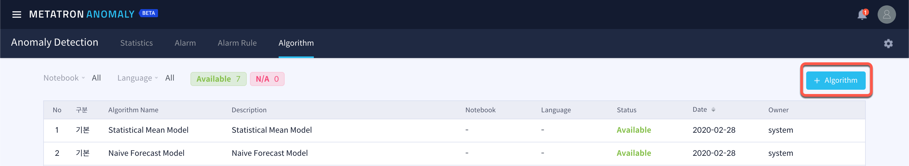

Algorithm¶
Metatron Anomaly utilizes machine learning algorithms to generate alarms for abnormal values in time series data. These outlier detection algorithms are divided into two types depending on whether or not an abnormal sample is used for training.
Supervised Anomaly Detection: A supervised learning algorithm that detects outliers using a training data set with normal or abnormal tags. High accuracy, but takes time and money to acquire abnormal samples.
Unsupervised Anomaly Detection: Unsupervised learning algorithm that can detect outliers even if there are no abnormal tags in the data set, assuming that most of the data are normal samples.
Metatron Anomaly provides learning of the Unsupervised algorithm as a standard to detect anomalies in all time series data without normal or abnormal data labels.
Metatron Anomaly provides the Algorithm Managerfunction to manage these algorithms and add new algorithms. The Algorithm Manager consists of the following three pages.
Algorithm List¶
If you enter the Algorithm tab of the Anomaly Detection sub-menu, you can see the algorithms available for model training in the list.

By default, Metatron Anomaly has the following seven statistical algorithms built into the system.
Seasonal Median Model
Statistical Mean Model
Regression Forecast Model
Naive Forecast Model
Simple Exponential Smoothing Forecast Model
Triple Exponential Smoothing Forecast Model
Long Triple Exponential Smoothing Forecast Model
Creating New Algorithm¶
You can add a new algorithm by clicking the + Algorithm button at the top right of the algorithm page.

Enter the name and description of the algorithm you want to create. The default working environment available is a Jupyter Notebook with Python language.

Algorithm Details¶
If you create a new algorithm, you will be moved to the detail page. In the category, if it is a user-generated algorithm, it will be displayed as an extension, and if it is a system-implemented algorithm, it will be displayed as a default.
Clicking the  next to the notebook takes you to the Jupyter Notebook environment where you can implement new algorithms. A linear regression algorithm is implemented as a basic template, and a new algorithm can be implemented by the user with appropriate modifications.
next to the notebook takes you to the Jupyter Notebook environment where you can implement new algorithms. A linear regression algorithm is implemented as a basic template, and a new algorithm can be implemented by the user with appropriate modifications.
You should test the implemented algorithm to see if it is suitable for your system. If you press the Test button at the bottom, the implemented algorithm will be tested internally for your system. Status will show the result. The test results are recorded as “N/A if never tested, Fail if failed, Available if successful.